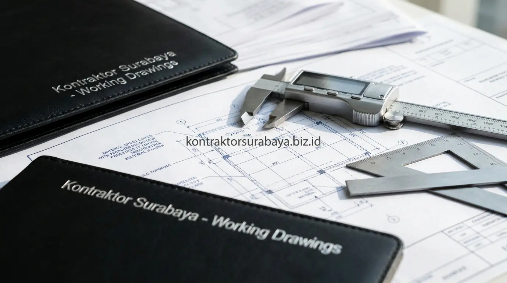

Membangun hunian impian atau gedung komersial di kota metropolitan seperti Surabaya membutuhkan perencanaan arsitektur yang matang. Namun, tidak sedikit pemilik proyek yang terjebak memilih studio arsitek amatir—hanya terpukau oleh gambar render 3D yang cantik di media sosial, namun ternyata dokumen gambar kerjanya tidak dapat diaplikasikan di lapangan oleh kontraktor pelaksana.
Untuk menghindari kerugian biaya bongkar-pasang dan kebuntuan birokrasi, memilih jasa arsitek bersertifikat resmi adalah langkah awal paling fundamental. Mari kita ulas mengapa legalitas sangat krusial, tips memilih arsitek profesional di Surabaya, serta ciri gambar kerja presisi yang siap dieksekusi di lapangan.
1. Kenapa Legalitas Arsitek Penting Sebelum Proyek Dimulai
Surat Tanda Registrasi Arsitek (STRA) dan Sertifikat Keahlian (SKA) menjadi bukti otentik bahwa seorang arsitek telah memenuhi standar kompetensi keilmuan, kepatuhan kode etik, dan pertanggungjawaban hukum profesi yang diakui secara resmi di Indonesia.
Tanpa legalitas ini, klien tidak memiliki jaminan bahwa arsitek yang dipilih benar-benar memahami standar teknis, regulasi keselamatan bangunan (SNI), dan tata ruang wilayah Surabaya. Risiko kesalahan desain yang berdampak pada kegagalan struktur saat konstruksi maupun penolakan izin PBG (Persetujuan Bangunan Gedung) menjadi jauh lebih tinggi dibanding mempercayakan proyek kepada arsitek berlisensi resmi.
2. 5 Tips Memilih Arsitek Surabaya yang Bersertifikat Resmi
Memeriksa STRA yang masih berlaku, memastikan keanggotaan aktif di IAI, mengevaluasi portofolio sesuai gaya yang diinginkan, memastikan gambar kerja bisa dieksekusi kontraktor, dan meminta kontrak kerja tertulis adalah lima tips utama memilih arsitek bersertifikat di Surabaya:
1. Periksa Masa Berlaku STRA
Pastikan nomor registrasi STRA arsitek masih aktif dan terdaftar di Dewan Arsitek Indonesia (DAI) sesuai identitas resmi penanggung jawab teknis.
2. Keanggotaan Aktif IAI Jawa Timur
Arsitek yang terdaftar aktif di Ikatan Arsitek Indonesia (IAI) Jawa Timur terikat pada standar kode etik profesi dan pembaruan regulasi arsitektur terkini.
3. Evaluasi Portofolio Proyek Nyata
Tinjau portofolio proyek terbangun (bukan sekadar konsep 3D render) untuk menilai konsistensi hasil desain dengan realisasi bangunan fisik di lapangan.
4. Pastikan Gambar Siap Bangun
Pastikan paket dokumen mencakup Detail Engineering Design (DED) lengkap dengan modul struktur terukur yang siap dihitung menjadi RAB konstruksi.
5. Minta Kontrak Kerja Tertulis & Transparan
Sepakati kontrak tertulis yang mencantumkan rincian cakupan layanan, batas jumlah revisi desain, jadwal penyelesaian berkas (milestone), dan hak kepemilikan dokumen gambar.
3. Bagaimana Legalitas Arsitek Memengaruhi Proses Perizinan PBG?
Pengurusan Persetujuan Bangunan Gedung (PBG) melalui sistem informasi pemerintah (SIMBG) mensyaratkan dokumen teknis arsitektur yang telah divalidasi dan dibubuhi tanda tangan arsitek ber-STRA resmi. Dokumen desain yang ditandatangani oleh arsitek bersertifikat resmi umumnya lebih cepat diverifikasi oleh Tim Profesi Ahli (TPA) / Tim Penilai Teknis (TPT) dinas terkait.
Sebaliknya, dokumen dari desainer tanpa kualifikasi resmi berisiko ditolak berkali-kali pada tahap sidang verifikasi teknis. Hal ini tidak hanya membuang waktu berbulan-bulan, tetapi juga menunda jadwal dimulainya proyek konstruksi fisik di lokasi.

4. Ciri Gambar Kerja yang Bisa Langsung Dieksekusi Kontraktor
Gambar arsitektur yang profesional bukan hanya sedap dipandang mata, tetapi harus berfungsi sebagai panduan teknis yang mudah dipahami oleh mandor dan tukang di lapangan. Berikut empat ciri gambar kerja berkualitas:
- Skala gambar yang presisi: Memastikan seluruh ukuran denah, tampak, dan potongan sesuai dengan batas tapak lahan aktual tanpa adanya distorsi proporsi.
- Detail struktur yang lengkap: Menghindarkan kontraktor dari kebingungan mengenai dimensi kolom, balok, pembesian plat lantai, maupun jenis pondasi tapak yang harus dicor.
- Notasi material yang jelas: Mencantumkan spesifikasi merek material, kode warna keramik/granit, ketebalan kaca, dan tipe kusen untuk mempermudah penyusunan Bill of Quantities (BQ).
- Koordinasi dengan gambar MEP: Mencegah terjadinya bentrok (*clash*) antara jalur instalasi pipa air kotor, pipa AC, kabel listrik, dengan elemen balok struktur beton.
5. Risiko Memilih Arsitek Tanpa Legalitas Resmi
Memilih jasa desain hanya berdasarkan tarif murah tanpa legalitas resmi membuka celah terjadinya berbagai risiko fatal sepanjang pelaksanaan proyek:
- Gambar kerja yang tidak lengkap: Sering kali hanya berupa denah 2D sederhana tanpa potongan detail, sehingga kontraktor terpaksa berspekulasi saat memasang instalasi.
- Kesulitan dalam proses perizinan PBG: Dokumen tidak diakui dinas perizinan karena tidak memiliki penanggung jawab profesi resmi.
- Tanggung jawab profesi yang tidak jelas: Klien kesulitan menuntut garansi atau perbaikan apabila terjadi kegagalan fungsi ruang atau kebocoran desain di kemudian hari.
- Potensi pembengkakan biaya (Over-budget): Kesalahan teknis gambar yang baru disadari saat konstruksi fisik berjalan akan memicu biaya bongkar-pasang yang sangat mahal.
6. Kesalahan Umum saat Menyeleksi Jasa Arsitek
Sebelum menandatangani kesepakatan desain, pastikan Anda menghindari empat kesalahan klasik berikut:
- Hanya membandingkan harga per meter persegi: Mengambil penawaran termurah tanpa mengecek kelengkapan lembar kerja DED yang akan diserahkan.
- Tidak meminta contoh gambar kerja detail: Hanya melihat portofolio Instagram tanpa mengecek ketebalan dan ketelitian buku gambar kerja proyek sebelumnya.
- Mengabaikan komunikasi dan responsivitas: Arsitek yang sulit diajak berdiskusi sejak tahap awal akan menyulitkan koordinasi saat menghadapi kendala teknis di lapangan.
- Tidak menyepakati batas revisi sejak awal: Memicu perselisihan biaya tambahan jika proses desain membutuhkan modifikasi tata letak ruang di tengah jalan.
"Karya arsitektur sejati bukan sekadar gambar 3D yang memukau di layar, melainkan cetak biru presisi berlisensi yang dapat dibangun secara kokoh, aman, dan efisien oleh tim kontraktor."
Legalitas dan kualitas gambar kerja menjadi dua pilar utama dalam memastikan pembangunan berjalan lancar tanpa hambatan teknis maupun perizinan. Pelajari cakupan layanan desain lengkap kami pada halaman jasa arsitek Surabaya, kenali tim profesional kami pada halaman tentang kami, atau jelajahi karya terbangun pada galeri proyek kami.